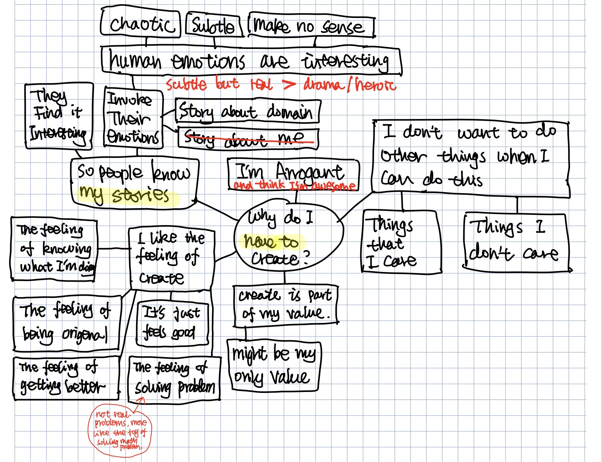
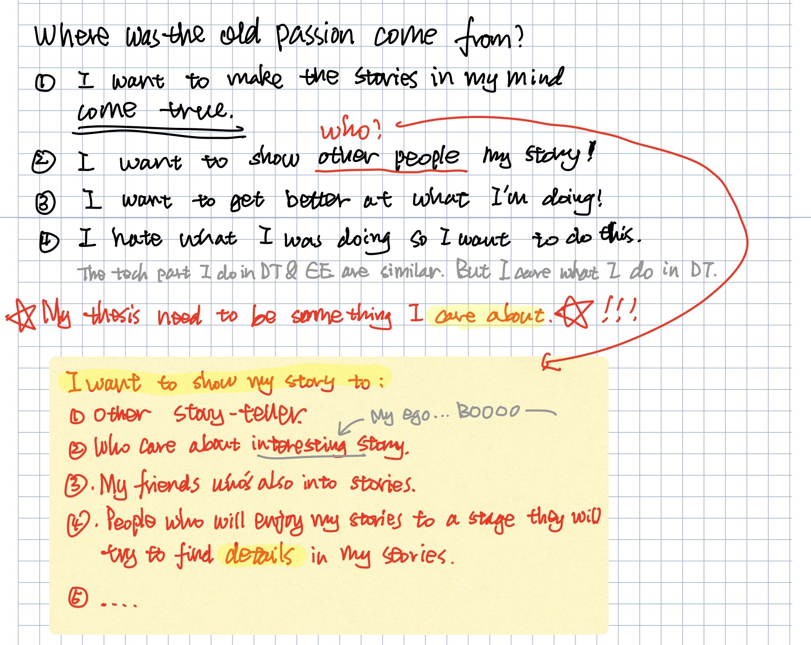
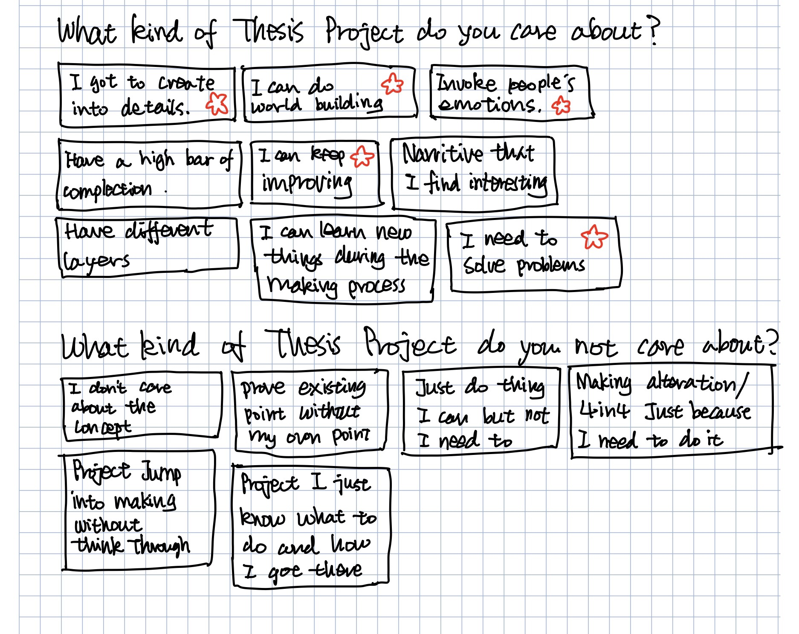
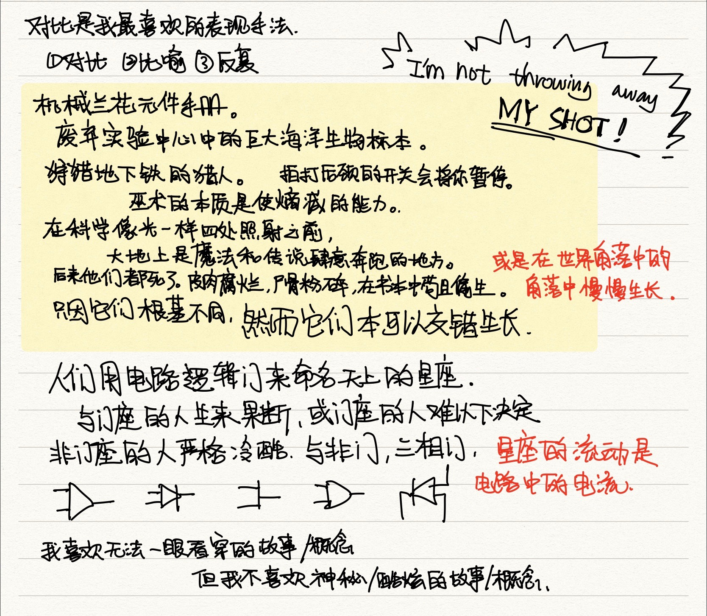
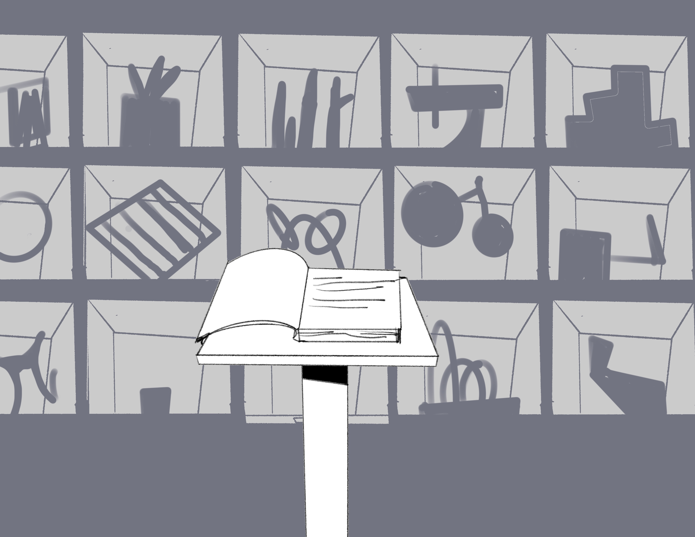

Week 4 Reflection
What happened last week…
This week now I finally feel like everything is back on track and going somewhere after my Thursday of running away from writing and 4in4. Wooo!
So for my original plan, I was gonna do a 4in4 for choosing my final topic. But I didn’t follow through last week after I did my first 4in4 on transformation, because I felt that three of my topics have something in common and could get a bigger concept out from it.
Self-Evaluation Maps:
This is not really what my thesis project needs, but I think I need this to set my mind straight to know why I need to do this. Where is my passion and how to use it in my thesis? It’s a very private matter, to be honest, but I think I’ll post this out as my commitment to my agony of self-analysis.
  Brainstorm(In Chinese):
I have been thinking about my learning experience in DT. I found something interesting that cause I never learned anything about design before DT and I don’t have any knowledge about design in Chinese. So when I think about design my brain work in the English way. It’s kinda like learning something in English for the first time like a child. My roommate is doing a thesis project on language and been asking us to write Chinese for her testing. I find that I been thinking & writing project ideas in English and in a way it’s limiting my thoughts. So I have been trying to write in Chinese about blurred images and fragments serve as trigger points for inspiration. I found this process kinda pleasing and I think I’ll keep doing this.
Breakthrough(maybe):
I know I shouldn’t think about the final form at this point but I think in a way deciding on this is helpful so I’m just leaving this here as a temporary stent to support future development.
So I think my interest is in the world-building of different technology development. I have been looking into media archeology and technology development theory. I’m interested in what if the development of technology is different and what that world will be like. I want to change the foundation or focus of the history of technology development in the case of speculative, what is the difference or possible outcome of technological development. For example, if we didn't abandon magic because of science. If we find a stable foundation in alchemy. If we did not choose to use packets switching when developing the Internet, we developed a mechanical structure that quickly and accurately changes the line. Our world will be different.
So the maybe form for my thesis might be a collection of showcase with objects from different parallel universes and a notebook of the protagonist on what that world is like and how that object from that universe works. I will do individual research on the different universe and dig in different domain of maybe universe and make a working object for that universe. The main story will be hidden in those notes and objects and showed the journey of the protagonist.
Things to do this week:
- Do an Elena Chart on the new topic and come up with different prototype ideas. 9/23
- List out all the possible/interesting ideas. 9/23
- Finish on the audience(How people feel, How will appreciate)(draft 2). 9/24
- Make the distance map on different ideas (advice by Lara). 9/25
- Come up concept/questions. 9/26
- Come up with research Plan. 9/26
Things to do next week:
- Through research on the main story. Digging into the development of technology and multiverse theory. 9/29
- Come up the basic outline of the main story. 9/29
- Make tough prototype on ideas. 7in7. One every day. Don’t need to do deep research but need feedback on users. 10/5
09/23/2019 I'm so excited and dead inside.